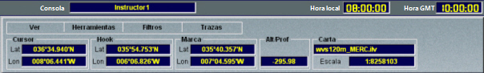
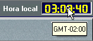

Datos de la Presentación Cartográfica
Esta área se encuentra en la zona superior de la Pantalla de Presentación Cartográfica.

En esta área se presentan el Menú de la Presentación Cartográfica y los siguientes campos de datos:
Consola – Identificador de la consola.
Cursor – Latitud y Longitud del Cursor.
Hook – Latitud y Longitud del Hook.
Marca – Latitud y Longitud de la Marca.
Alt/Prof – Altura o Profundidad de la posición del Hook.
Carta – Nombre de la carta mostrada en la Presentación Cartográfica.
Escala – Escala seleccionada en la Presentación Cartográfica.
Hora local – Cuando existe un ejercicio en ejecución, este campo muestra la hora local del ejercicio.
Al pasar el cursor por encima del campo Hora local se muestra información del desfase horario respecto a la hora GMT.

Hora GMT – Muestra la hora GMT.
Mediante el Menú de la Presentación Cartográfica se accede a la funcionalidad asociada a la Presentación Cartográfica.